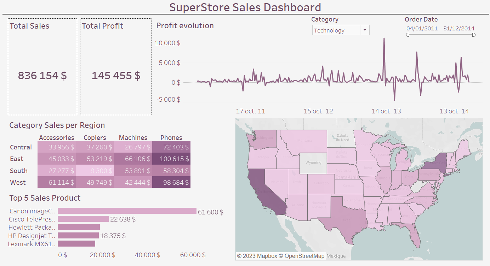

This project consists in realising a Tableau interactive dashboard with sales data extracted from an excel file going from 2011 to 2014 across the US.
Data gathering, cleaning and analysis with python
I first cleaned the data and analyzed the key attributes impacting the sales or the profit with Python thanks to the pandas library. This study is detailed on this commented code
available on my Github: The code.
Creation of Tableau Dashboard
On this dashboard, we can select the category of product, a special order date range by selecting on the filter or by selecting a part of the profit evolution
line chart (used as filter). We can also select a state on the map (working as a filter as well). By selecting a state we can see the top 5 client and the top 5 product sold. A total profit and sale is also displayed
at the top left corner of the dashboard. Finally, a breakdown of the sales by category and region is available on the middle left part of the screen.
This interactive visual can be found here on my Tableau Public profile (note: if you are on laptop think about ticking the option of displaying the dashboard as on a desktop at the bottom): The dashboard